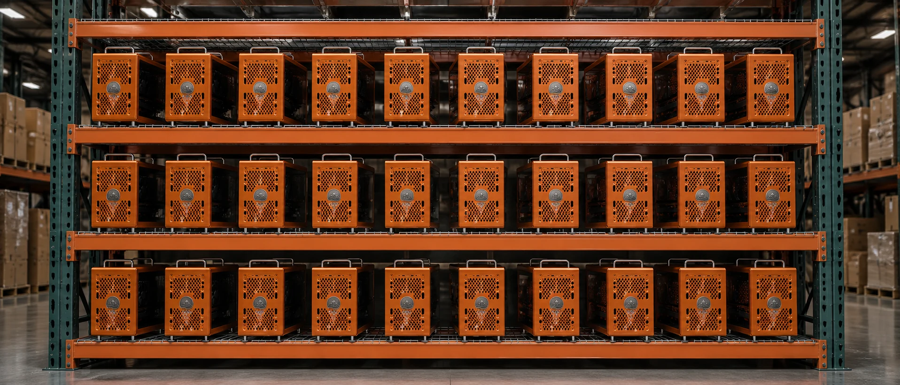

Every Summit system ships as a complete, sovereign inference stack — GPUs, chassis, frontier open-source models, and interface assembled, air-gapped, and burn-tested before it leaves the shop. Nothing phones home. Nothing leaves your building.
Tribal governments, law firms, clinics, and research labs run the same hardware, configured for the data they are bound to protect. Your prompts hit your GPUs and your responses come back from them — full stop.
| Specification | Summit Base (2x RTX PRO 6000) | Summit Pinnacle (4x RTX PRO 6000) |
|---|---|---|
| GPU | RTX PRO 6000 Blackwell, 96GB | RTX PRO 6000 Blackwell, 96GB |
| VRAM per Card | 96GB GDDR7 ECC | 96GB GDDR7 ECC |
| Memory Bandwidth | 1,597 GB/s per GPU | 1,597 GB/s per GPU |
| FP16 Tensor Performance | 1 PFLOP per GPU | 1 PFLOP per GPU |
| Interconnect | PCIe Gen 5 | PCIe Gen 5 |
| Combined VRAM | 192GB | 384GB |
| 70B Model Fit | Yes (FP16) | Yes (FP16) |
| V4-Flash (284B) | Yes (FP8, 22GB headroom) | Yes (full FP16) |
| Island Mountain Tier | Summit Base | Summit Pinnacle |

5th-generation Tensor Cores with native FP8 and FP4 and roughly 1 PFLOP of FP16 compute per card, built for modern inference.

Holds 70B-parameter models in full precision, or DeepSeek V4-Flash at FP8 with headroom for KV cache.

NVIDIA RTX / Enterprise ISV-certified drivers with a validated, long-lived support lifecycle - not consumer game-ready drivers.

Large-model fine-tuning, enterprise inference, CAD/CAE, and 24/7 production workloads - the jobs an on-prem stack actually runs.
Detects and corrects single-bit memory errors automatically - no silent data flips in clinical, legal, or defense inference.

GDDR7 memory feeds the Tensor Cores fast, sustaining high token throughput under continuous, always-on load.
Instant. Inference runs on your own GPUs, so tokens stream back at wire speed - no cloud round-trip, no queue, no latency. Immediate answers, hyper-localized to your rack.

A single Summit rack ramps to 6-8 RTX PRO 6000 Blackwell GPUs. Start with two and add cards as you grow - more VRAM, more throughput, more seats, all on-prem.

A fully ramped Summit rack serves 1,500-1,800 users. One-time hardware, no per-seat cloud fees, no metering. On-prem open source is a no-brainer.
Tell us what you're running, how many users need access, and what models matter most. We'll spec the right system.
Or call directly: 1-341-441-8740